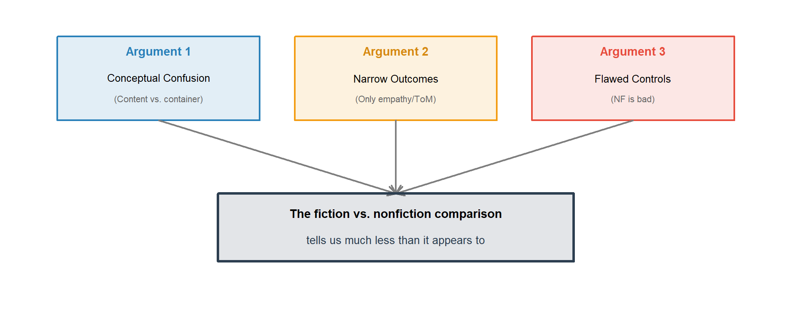

Content, Not Label
Three Reasons the Fiction vs. Nonfiction Comparison Falls Short
Preliminary Results
The question
“Does reading fiction make you more empathic, and more than nonfiction?”
Three meta-analyses say: maybe, a little (Wimmer et al., 2025; Dodell-Feder & Tamir, 2018; Mumper & Gerrig, 2017)
We argue: this conclusion rests on shaky ground.
We identify three fundamental limitations, supported by a meta-reanalysis of Wimmer et al. (2025; k = 269, 55 studies).
Overview: Three arguments

Argument 1: Conceptual Confusion
The fiction/nonfiction distinction may not be a meaningful independent variable
Content vs. container
Whether a story is fiction or nonfiction is only in the reader’s mind — a label, not a property of the text.
The placebo problem:
- The same text can be framed as fiction or nonfiction
- Any observed difference may reflect the label, not the narrative’s capacity to engage readers
- Even “impossible” fiction (sci-fi, paranormal) doesn’t cleanly separate the categories — many people believe extraordinary events are real
The perspective-taking claim:
“Fiction uniquely lets you put yourself in the shoes of the character.”
But why not nonfiction?
- Educated (Tara Westover)
- If This Is a Man (Primo Levi)
- The Diary of Anne Frank
- Behind the Beautiful Forevers
These are vivid, emotional, character-driven — and nonfiction.
Note
If the mechanism is vivid emotional storytelling and character identification, the relevant variable is the content of the work, not the container (fiction vs. nonfiction label). The field may be chasing the wrong moderator.
Argument 2: Narrow Outcomes
The literature looks at empathy and ToM — not prosocial behavior
What the three meta-analyses actually measure
| Meta-analysis | Stated focus | Dependent variables |
|---|---|---|
| Wimmer et al. (2025) | “Cognitive benefits” broadly | Empathy, ToM, creativity, critical thinking, etc. |
| Dodell-Feder & Tamir (2018) | Social cognition | Empathy + Theory of Mind |
| Mumper & Gerrig (2017) | Social cognition | Empathy + Theory of Mind |
What has been measured
- Empathy (self-report scales)
- Theory of Mind (RMET, Yoni task)
- Emotion recognition
- (Occasionally) moral cognition
All cognitive outcomes. No behavior.
What has never been measured
Behavioral: helping, donations, dictator game, aggression, intergroup behavior
Attitudinal: intergroup attitudes (explicit/implicit), polarization, warmth thermometers, humanization, compassionate love, sectarianism
Warning
Empathy and ToM do not reliably predict prosocial behavior (Eisenberg & Miller, 1987; Jordan et al., 2016). The conclusions from comparing fiction and nonfiction are strikingly limited: they tell us about empathy questionnaires, not whether people actually act more prosocially.
Argument 3: Flawed Controls
The nonfiction comparison conditions are poorly matched, inflating the apparent fiction advantage
The dataset
| Source | Scope | Size |
|---|---|---|
| Wimmer et al. (2025) | Experimental: fiction vs. all controls | 371 ESs, 68 studies |
| ↳ Fiction vs. nonfiction | Our primary analysis | 269 ESs, 55 studies |
We focus on fiction vs. nonfiction comparisons because these are where the content confound lives.
We used an LLM-based coding scheme to rate the inspirational prosociality (1–5) of both fiction and nonfiction stimuli for every study where stimuli were described.
Does the text model or celebrate virtue — heroism, sacrifice, compassion, moral courage — in ways that could inspire the reader?
The overall fiction effect

Overall stats at a glance
Wimmer et al. (2025) original results
| Analysis | g | 95% CI | p | k | Studies |
|---|---|---|---|---|---|
| Overall (all comparisons) | 0.14 | [0.06, 0.21] | .0004 | 371 | 70 |
| Fiction vs. nonfiction | 0.10 | [0.02, 0.18] | .017 | 269 | 55 |
| Fiction vs. reading nothing | 0.23 | < .006 | 70 | 22 | |
| Fiction vs. watching fiction | 0.31 | < .006 | 14 | 4 |
Significant moderations by outcome: empathy (g = 0.16) and mentalizing (g = 0.15) only. No significant effects for knowledge, moral cognition, outgroup judgments, or other thinking processes.
Our re-analysis (fiction vs. nonfiction only)
| Analysis | g | 95% CI | p | k | Studies |
|---|---|---|---|---|---|
| Fiction vs. nonfiction (subgroup model) | 0.112 | [0.026, 0.197] | 0.0113 | 269 | 55 |
| “All Correct” studies only | 0.088 | [-0.103, 0.279] | 0.333 | 100 | 12 |
| Social cognition DVs only | 0.133 | [0.033, 0.233] | 0.0107 | 191 | 34 |
Note: Our subgroup estimate (g ≈ 0.11) differs slightly from Wimmer’s moderator-model estimate (g = 0.10) because their model estimates variance components across all comparison types.
. . .
Important
The overall effect is small (g ≈ 0.11). Restricting to methodologically sound studies (“All Correct”) renders it nonsignificant.
NF controls score abysmally on inspirational prosociality

Fiction: ranges 2–5 (many stories model empathy, resilience, moral courage). Nonfiction controls: only 1 or 2. Potatoes, pigeons, physics. Nobody has ever used NF with potence ≥ 3.
This is no longer a vague intuition — it’s now quantified.
Potence moderator analysis
| Moderator | b | p | Interpretation |
|---|---|---|---|
| NF potence | 0.384 | 0.004107 | NF quality strongly predicts fiction advantage |
| Fiction potence | 0.045 | 0.408 | How inspirational the fiction is doesn’t matter |
| Joint: NF potence | 0.383 | 0.003413 | NF remains significant controlling for fiction |
| Joint: Fiction potence | 0.043 | 0.356 | Fiction still NS controlling for NF |
Important
It’s not about how good the fiction is. It’s about how bad the control is.
NF potence predicts the fiction advantage (p = 0.004107). Fiction potence does not (p = 0.408).
Mean effect by NF potence

Three-level thematic analysis
| NF control type | Example | g | p | k | Studies |
|---|---|---|---|---|---|
| Irrelevant (NF_P ≤ 2) | Potatoes, pigeons, physics | -0.017 | 0.717 | 82 | 26 |
| Topic-matched (NF_P = 3) | Essay on honor violence | 0.5 | 0.0139 | 44 | 6 |
| Emotionally matched (NF_P ≥ 4) | Memoir, empathic testimony | 0.136 | 0.237 | 37 | 3 |
Omnibus test: QM = 8.59, p = 0.00103
Important
Fiction only “wins” against topic-matched controls — a small cluster of studies. Against both irrelevant and emotionally matched controls, the fiction effect is null.
The pattern, visualized

The “fiction advantage” is an inverted U: absent with irrelevant controls, present against topic-matched controls, and back to null with emotionally matched controls.
The gap nobody has tested
No study has ever used NF with inspirational potence ≥ 3.
| Tested in the literature | Never tested | |
|---|---|---|
| Fiction | Chekhov, Lahiri, Saunders (pot. 2–3) to Saramago, refugee narratives (pot. 5) | — |
| NF control | Potatoes, pigeons, automobile, gardening (pot. 1) | Stories of heroism, compassion, moral courage |
| NF potence | Max = 2 | 3, 4, or 5 don’t exist |
Think of the NF that could be used: Primo Levi (If This Is a Man), Bryan Stevenson (Just Mercy), Viktor Frankl (Man’s Search for Meaning), Salzberg (Lovingkindness). These model virtue, sacrifice, compassion — potence 4–5. Nobody has tested them.
The right experiment hasn’t been run yet.
Publication bias

Egger’s test: b = 1.68, p = 0.0494 — small-study bias present.
Argument 3: Summary
The nonfiction controls are flawed
- The fiction effect (g ≈ 0.11) is small and fragile — nonsignificant in “All Correct” studies
- LLM coding confirms: NF controls score 1–2 on inspirational prosociality — nobody has tested NF potence ≥ 3
- NF potence predicts the fiction advantage (p = 0.004107); fiction potence does not
- The fiction advantage is an inverted U: null against irrelevant controls, present against topic-matched, null again against emotionally matched
- Publication bias present (Egger’s p < .05)
The “fiction advantage” is a control-quality artifact.
Synthesis
Three arguments, one conclusion

Future directions
Based on these three critiques, we propose that the field should:
1. Test the content-vs-container hypothesis directly (Arg 1)
- Same narrative framed as fiction vs. nonfiction
- Cross with content quality to separate label effects from content effects
2. Measure a broader array of outcomes (Arg 2)
- Prosocial behavior (helping, donations, dictator games)
- Intergroup outcomes (attitudes, polarization, warmth, humanization)
- Real-world behavioral proxies (clicks, approach/avoid)
3. Use properly matched stimuli (Arg 3)
- Fiction and nonfiction matched on content quality, vividness, emotional depth, narrative engagement
- Varying only the fiction/nonfiction label (or using naturally occurring pairs)
- Including NF with high inspirational potence (≥ 3) — never yet tested
Connection to current work
Thériault et al. (2025)
- Reading prosocial nonfiction (Salzberg, Ricard, Thích Nhất Hạnh) was more effective than loving-kindness meditation at boosting prosociality
- Provides existence proof: high-potence NF works
Book project
- AI simulations → which nonfiction books best reduce polarization
- 10-min/day reading intervention (10 weeks)
- Salzberg, Ricard, Van Bavel & Packer, etc.
- Measures: polarization, warmth thermometers, dictator game, sectarianism
This paper
- Provides the meta-analytic foundation for these projects
- Shows that the existing fiction-vs-NF comparison is:
- Conceptually confused (Arg 1)
- Too narrow (Arg 2)
- Artifact-ridden (Arg 3)
- Motivates the shift from genre to content as the key variable
Next steps
- RA tasks (briefing ready):
- Literature search: 2021–2026 papers, forward citations
- Independent prosociality coding → inter-rater reliability
- Extract effect sizes from new studies
- Analysis:
- Expanded dataset — does the pattern replicate?
- Selection models for publication bias
- Narrativity moderator
- Writing:
- Structure paper around the three arguments
- Lead with conceptual framing, close with empirical reanalysis
- Decisions: Green-light RA? Target journal?
Summary
Argument 1 — Conceptual confusion:
- Fiction/NF is a label, not a text property — possible placebo effect
- Perspective-taking works in vivid NF too. Content > container.
Argument 2 — Narrow outcomes (scope):
- Literature limited to empathy and ToM — no prosocial behavior
- Empathy ≠ behavior. Conclusions don’t generalize to what people actually do.
Argument 3 — Flawed controls (empirical):
- Fiction effect: g ≈ 0.10 — fragile, NS in “All Correct” studies
- LLM coding: NF controls all score 1–2 on inspirational prosociality
- NF potence predicts the fiction advantage; fiction potence does not
- No study has ever used NF with potence ≥ 3. The right experiment hasn’t been run.
Content, Not Label Three Reasons the Fiction vs. Nonfiction Comparison Falls Short Preliminary Results